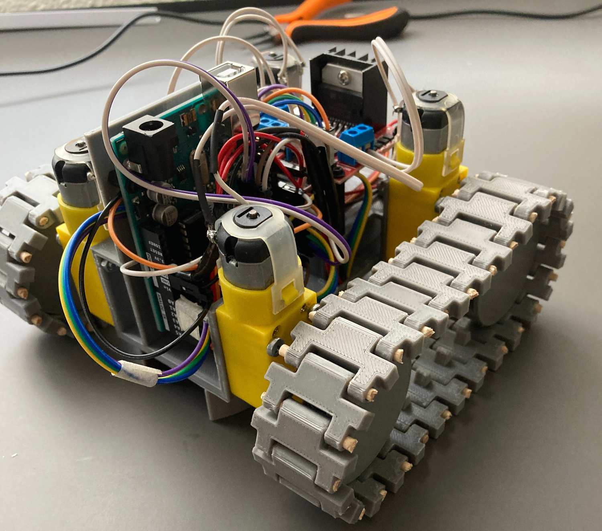

RoboPacMan

This is my final degree project. It consists of a replica of the classic game MsPacMan with robots playing on a board using the internet of things as primary tecnology. The simulation of the game happens on a computer where both the ghosts and MsPacMan are controlled by a custom AI. Through an Arduino that acts as a server, the actions produced in the game, reach each individual robot reproducing an actual game.
The project is made from the ground up. After numerous iterations I developed the robot to a state in wich it can actually play a full game of MsPacMan
This has been probablly my biggest and most dificult project to date as it touched areas that were not my specialization at first. But at the end, I'm proud of all that I've achived by my own. I'm also proud of working together with my University (Universidad Complutense de Madrid) and with Bosch.

TThe entiry project is public on my GitHub.